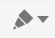
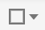
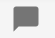
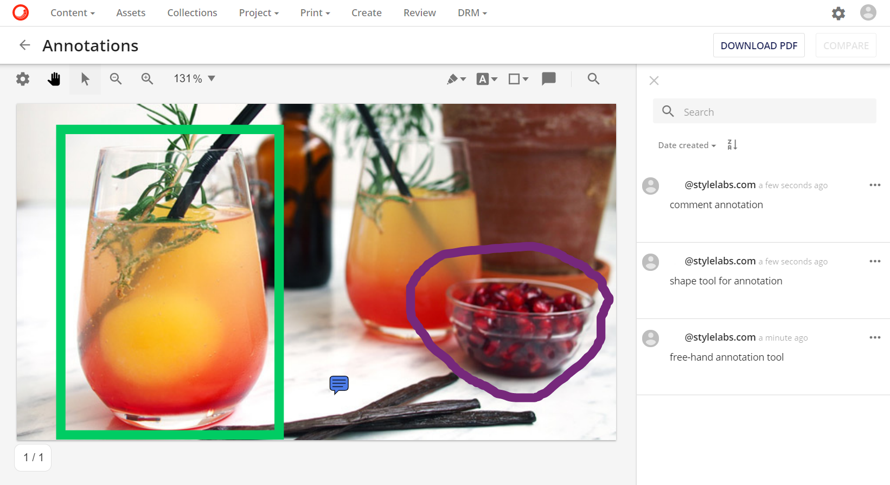
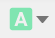
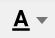
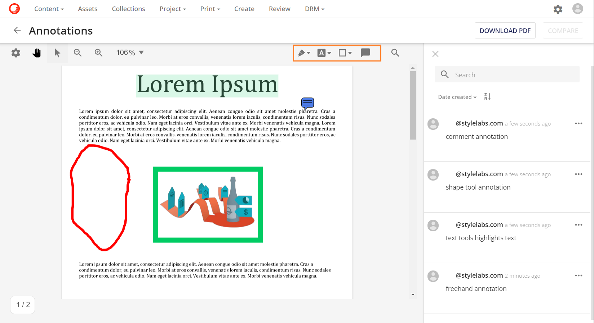
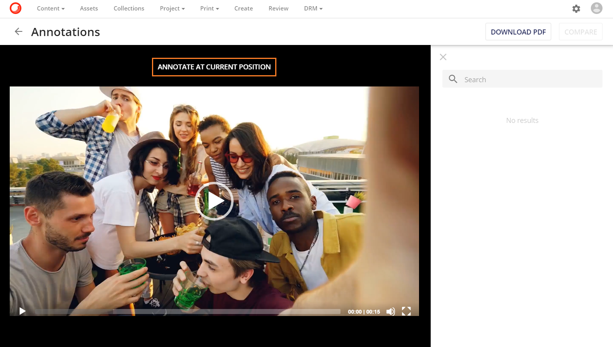
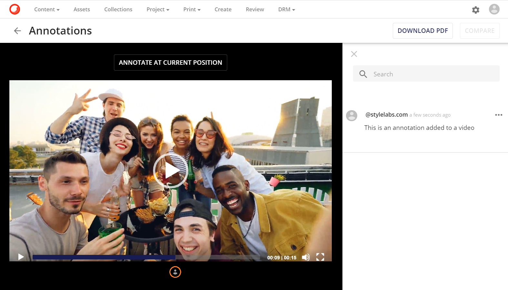

アノテーションとメディアタイプ
アノテーションは以下のメディアタイプに対応しています。
- 画像アセット
- PDFアセット
- ビデオアセット
- オーディオアセット
利用可能なアノテーションツールはメディアタイプごとに異なります。アノテーションツールの詳細については、このセクションを参照してください。
画像アノテーション
画像アセットに対しては、ユーザーは任意の組み合わせを使ってアノテーションを作成することができます。
- フリーハンドツール: 
- 形状ツール： 
- コメント： 

PDF アノテーション
PDF アセットの場合、ユーザーは任意の組み合わせを使用してアノテーションを作成することができます。
- フリーハンドツール:
- テキストツール - ハイライト: 
- テキストツール - 下線: 
- テキストツール - 下波線:

- テキストツール - 取消線:

- 形状ツール:
- コメント:

ビデオ/オーディオアノテーション
ビデオアセットとオーディオアセットには、時間ベースのアノテーションを設定することができます。動画/音声ファイルを再生した後、現在位置にアノテーションを付けるボタンをクリックすると、動画/音声ファイルの正確な瞬間にアノテーションを設定することができます。

ボタンをクリックすると、新しいモーダルウィンドウが表示され、ユーザーがアノテーションを入力することができます。

アノテーションが作成されると、アノテーションの瞬間（ファイルのプログレスバーの下）に新しいインジケータが表示されます。インジケータをいつでもクリックすると、ユーザーはビデオ/オーディオファイル内のアノテーションの正確な瞬間に移動できます。
